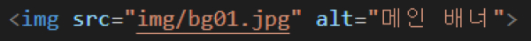
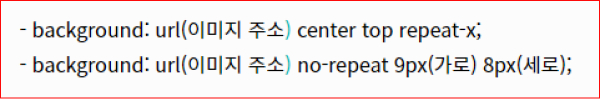
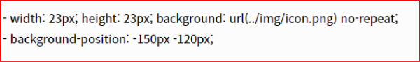

CSS img 표현방법
웹 사이트에서 이미지를 표현하는 방법을 알아보겠습니다.
1. Img 태그
이미지의 의미가 있을 때에 img 태그를 사용하여 표현하며, Alt 를 이용하여 대체문자를 적어야합니다.

2. Background 속성
이미지의 의미가 없을때 background 속성을 사용하며 대체문자를 적을 필요가 없습니다.

3. 이미지 스프라이트 기법
여러개의 이미지들을 하나의 이미지에 합쳐서 관리합니다. 이 방법을 사용하면 이미지의 관리가 용이하며
웹페이지의 용량을 줄여줌으로 인해 로딩시간도 단축시킬수 있습니다.
IR기법을 통해 가상으로 대체문자를 만들어 사용합니다.
